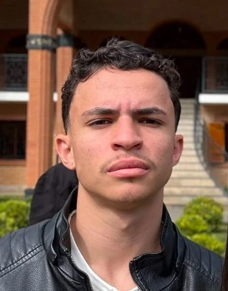

Transformo ideias em APIs que funcionam.
Estudante de Sistemas de Informação e futuro Desenvolvedor Back-End Java. Código limpo, bancos de dados bem modelados e vontade de evoluir todo dia.
Back-end é onde eu quero estar.
Quem sou
Olá! Sou Cauã Adriani, estudante de Sistemas de Informação, apaixonado por tecnologia e desenvolvimento Back-end. Estudo Java, Spring Boot, APIs REST, bancos SQL e desenvolvimento Web. Meu objetivo é conquistar minha primeira oportunidade como Desenvolvedor Java e continuar evoluindo.
ano em que comecei a programar
projetos publicados
tecnologias no repertório
formatura (previsão)
Tecnologias
Java
Orientação a objetos e aplicações robustas. Foco principal, com Spring Boot e APIs REST.
SQL / MySQL
Modelagem de dados e consultas em bancos relacionais.
Python
Automação e scripts de dados.
PHP
Server-side e bancos relacionais.
C#
OOP e boas práticas.
HTML · CSS · JavaScript
Páginas semânticas, responsivas e acessíveis.
Git & GitHub
Versionamento e colaboração organizada.
Projetos
Gestão Shop ↗
Sistema desktop em Java para gerenciamento de produtos, clientes e vendas.
API REST ↗
API com Java e Spring Boot para gerenciamento de usuários e autenticação.
Portfólio Pessoal ↗
Portfólio responsivo para apresentar projetos, habilidades e trajetória.
Formação e objetivos
Estudando agora
HTML & CSS85%
Java75%
JavaScript60%
Spring Boot35%
Vamos construir algo juntos?
Disponível para estágio, freelancer e desenvolvimento Back-end.